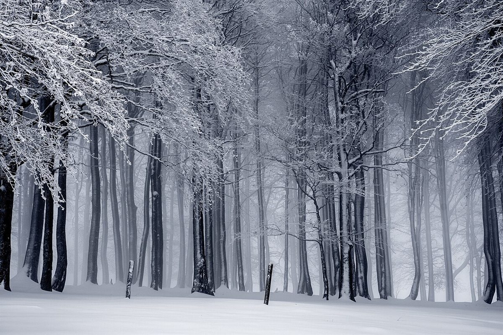
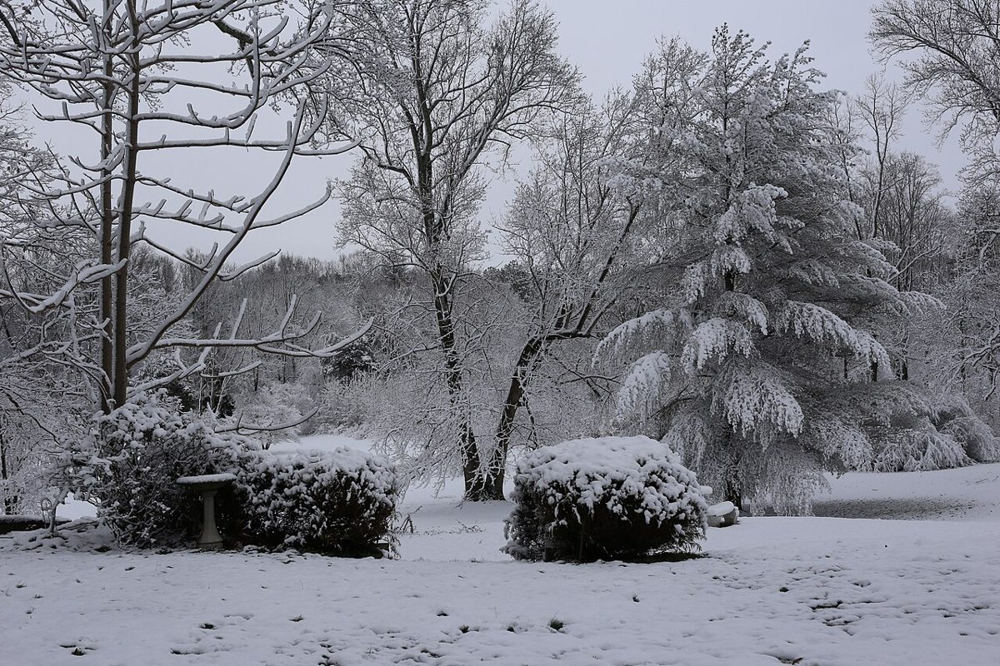
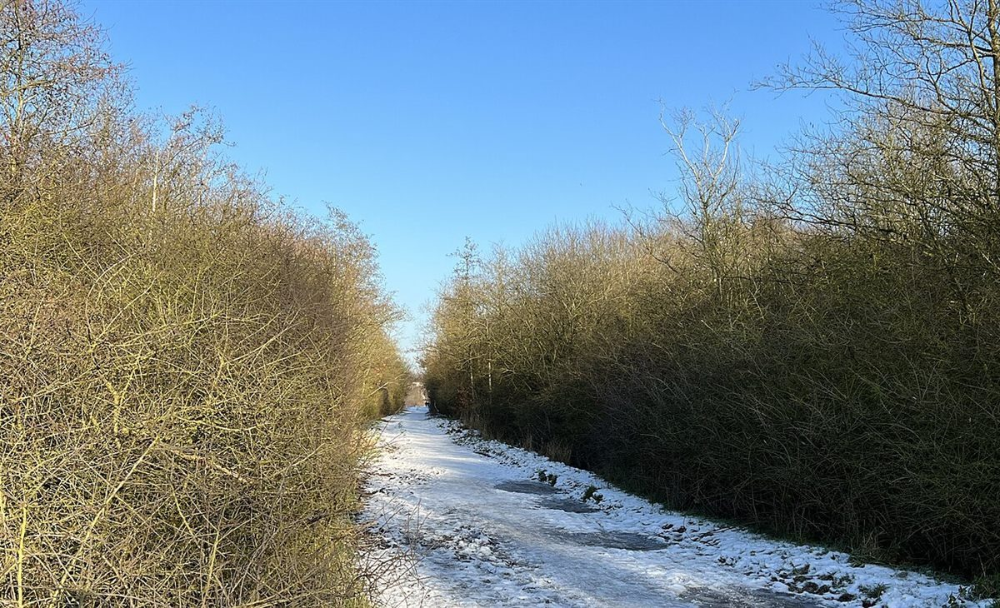
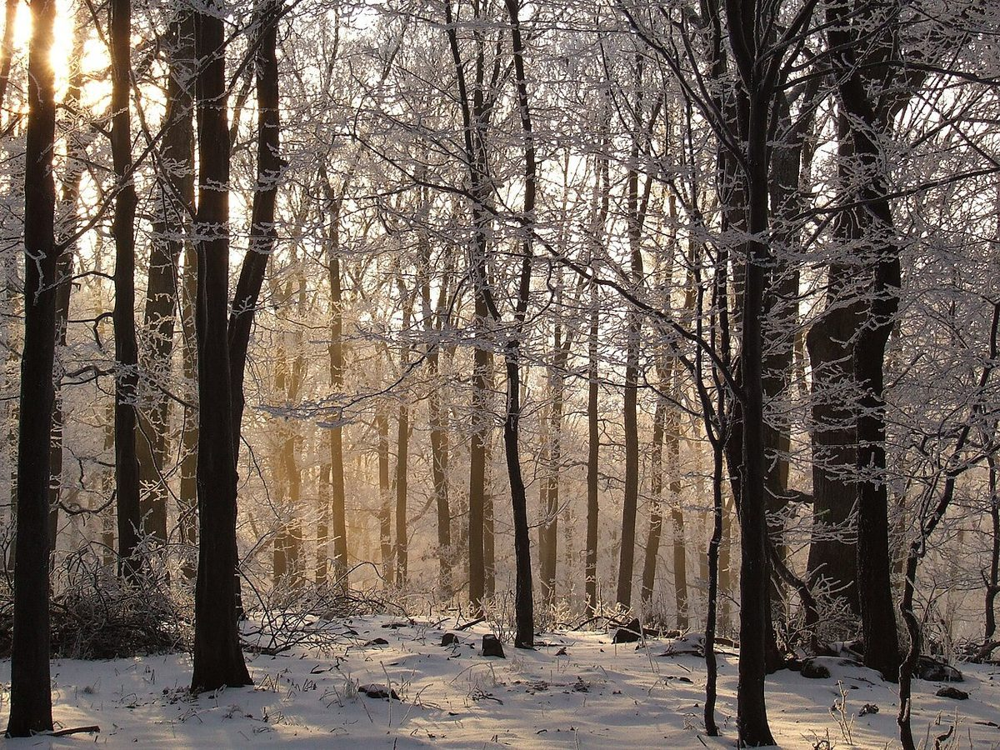

制作側の連想
灯籠をひとつ、積んでみる
「雪見月」という屋号から、制作側が雪見灯籠(雪景色を眺めるための、笠の広い灯籠)を連想しました。灯籠の部位名(笠・火袋・中台・竿・基礎)を5ページの名前に借りています。制作側の連想で、お店の理念・由来とは無関係です。
雪景色のイメージ
白い景色を、あたたかい灯りで。
写真は藤枝市やお店のものではありません。冬のイメージで選んだ、国外・撮影地不明のフリー素材です。



ご案内
確認できていること
| 所在地 | 〒426-0031 静岡県藤枝市築地1丁目13-15 |
|---|---|
| 電話 | なし |
| 営業時間 | 準備中 |
| 定休日 | 準備中 |
| ご予約 | 準備中 |
| 駐車場 | 準備中 |
| SNS | Instagram @cafe_yukimizuki |